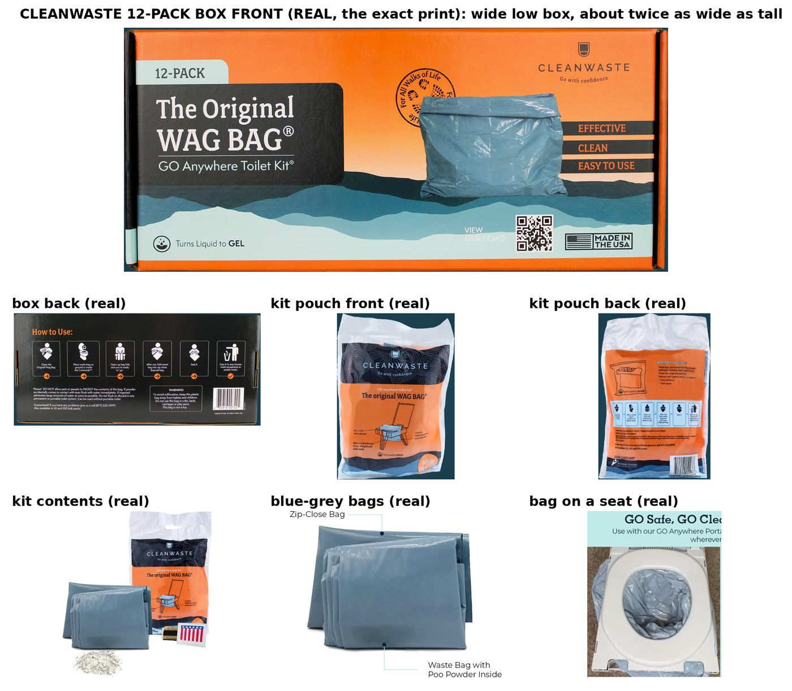

<title>Cleanwaste Ad Review</title>
<meta name="claude:viewport-fit-sides" content="cover">
<style>
/* Layout: one reading column, plan sections stacked; shot tables scroll on phones */
:root{--bg:#f6f7f8;--fg:#1d2328;--muted:#5d6a73;--line:#d8dee3;--accent:#e36a1f;--teal:#2c6e7f;--card:#ffffff;
--display:"Archivo",system-ui,sans-serif;--body:"Source Sans 3",system-ui,sans-serif}
@media (prefers-color-scheme:dark){:root:not([data-theme="light"]){--bg:#12171b;--fg:#e8ecef;--muted:#9aa8b1;--line:#2a343b;--accent:#f08a45;--teal:#5fb0c2;--card:#192026;color-scheme:dark}}
:root[data-theme="dark"]{--bg:#12171b;--fg:#e8ecef;--muted:#9aa8b1;--line:#2a343b;--accent:#f08a45;--teal:#5fb0c2;--card:#192026;color-scheme:dark}
body{background:var(--bg);color:var(--fg);font:16px/1.5 var(--body);padding-left:max(16px,env(safe-area-inset-left,0px));padding-right:max(16px,env(safe-area-inset-right,0px));padding-block:24px 48px}
main{max-width:880px;margin:0 auto;display:grid;gap:28px}
h1,h2{font-family:var(--display);text-wrap:balance;margin:0} h1{font-size:1.7rem} h2{font-size:1.2rem;border-bottom:2px solid var(--accent);padding-bottom:4px}
.eyebrow{text-transform:uppercase;letter-spacing:.08em;font-size:.78rem;color:var(--teal);font-weight:700}
.muted{color:var(--muted)} section{display:grid;gap:10px;min-width:0}
.two{display:grid;grid-template-columns:repeat(auto-fit,minmax(280px,1fr));gap:16px}
.card{background:var(--card);border:1px solid var(--line);border-radius:8px;padding:14px 16px;min-width:0}
ol{margin:0;padding-left:1.4em} li{margin:3px 0}
.wrap{overflow-x:auto;border:1px solid var(--line);border-radius:8px;background:var(--card)}
table{border-collapse:collapse;width:100%;min-width:720px;font-size:.92rem} td,th{border-bottom:1px solid var(--line);padding:8px;vertical-align:top;text-align:left}
th{font-family:var(--display);font-size:.8rem;text-transform:uppercase;letter-spacing:.05em;color:var(--muted)}
.pill{display:inline-block;padding:1px 8px;border-radius:99px;font-size:.75rem;font-weight:700;white-space:nowrap}
.pill.h{background:var(--accent);color:#fff} .pill.f{background:var(--teal);color:#fff}
.num{font-variant-numeric:tabular-nums;text-align:right} img{max-width:100%;border-radius:8px;border:1px solid var(--line)}
.total td{font-weight:700}
</style>
<link rel="stylesheet" href="https://fonts.googleapis.com/css2?family=Archivo:wght@600;800&family=Source+Sans+3:wght@400;600&display=swap">
<main>
<header><div class="eyebrow">Grace · TikTok Shop · Plan for approval · 2026-10-21</div><h1>Cleanwaste toilet kit ads</h1>
<p class="muted">Two hands-only AI videos, 30–35 s each, Grace C voiceover, no on-screen text. Nothing is generated until Ralph approves.</p></header>

<section><h2>Scripts</h2><div class="two">
<div class="card"><div class="eyebrow">V1 · Grace's own script, word for word · grade 5.2 · ~30 s</div><ol><li>You prepared for the power to go out but did you prepare for the toilet to stop working</li><li>Most people stock up on water food and flashlights but forget about the bathroom</li><li>That&#x27;s where these Cleanwaste toilet kits come in</li><li>Each kit has a waste bag with powder that gels liquid and helps control odor</li><li>You also get toilet paper a hand wipe and a zip close disposal bag</li><li>You can even use it with a regular toilet that won&#x27;t flush</li><li>It&#x27;s one less thing to figure out during an emergency</li><li>Add these to your emergency supplies</li></ol></div>
<div class="card"><div class="eyebrow">V2 · House version, hook H133 · grade 3.1 · ~34 s</div><ol><li>This is the kind of thing you buy before you are desperate.</li><li>Most people stock up on water, food and flashlights, and forget the bathroom.</li><li>No water, or a well pump with no power, and that toilet won&#x27;t flush.</li><li>These Cleanwaste kits cover it.</li><li>Each one has a waste bag with powder that gels liquid and helps control odor.</li><li>Then toilet paper, a hand wipe, and a zip bag to seal it.</li><li>It fits your regular toilet, and it all goes out with the trash.</li><li>Honestly, I&#x27;m mad I waited this long.</li><li>Winter storms are coming, and there are twelve kits in a box.</li><li>Grab one for the house and one for the car. It&#x27;s in the orange cart.</li></ol></div></div>
<p class="muted">Every claim checked on cleanwaste.com and the box: the powder gels liquid and deodorizes, the kit has a zip-close bag, toilet paper and a hand wipe, and it "also fits non-working toilets". No flushing is shown (the box says DO NOT FLUSH).</p></section>

<section><h2>Real product reference</h2>
<p class="muted">Built from real photos only. Every product still and clip uses it, and no label is pasted on afterwards.</p></section>

<section><h2>V1 shots · bright white bathroom, oak counter, hall closet</h2><div class="wrap"><table><tr><th>#</th><th>Words</th><th>Type</th><th>Shot</th><th>Engine</th></tr><tr><td>S1</td><td><q>You prepared for the power to go out</q></td><td><span class='pill h'>HAND</span></td><td>Close-up in a bright hallway: a hand holds a small black LED flashlight pointed slightly down, thumb on its button; behind it, softly out of focus, a white wire shelf with gallon water jugs and canned food. The flashlight is off.<br><em>Motion:</em> The thumb presses the button once and the flashlight turns on (a soft white beam); the hand tilts it a few degrees. Slow push-in. The room stays fully bright.</td><td>Seedance 2.0 Mini</td></tr>
<tr><td>S2</td><td><q>but did you prepare for the toilet to stop working</q></td><td><span class='pill f'>HAND-FREE</span></td><td>A clean white toilet with the lid closed in a bright white bathroom with white subway tile and a frosted daylight window, seen from standing height a little to the side.<br><em>Motion:</em> Only the camera moves: a slow smooth dolly-in toward the closed toilet. Nothing in the room moves.</td><td>Kling (Ralph acct)</td></tr>
<tr><td>S3</td><td><q>Most people stock up on water food and flashlights but forget about the bathroom</q></td><td><span class='pill f'>HAND-FREE</span></td><td>A white garage storage shelf, eye level: rows of bottled water and gallon jugs, canned food, two black flashlights and a pack of batteries, neatly stocked, bright daylight.<br><em>Motion:</em> Only the camera moves: a slow sideways tracking move along the shelf from the water to the canned food to the flashlights. Nothing on the shelf moves.</td><td>Kling (Ralph acct)</td></tr>
<tr><td>S4</td><td><q>That&#x27;s where these Cleanwaste toilet kits come in</q></td><td><span class='pill h'>HAND</span></td><td>On a light oak kitchen counter, the box stands upright on its long edge facing the camera straight on; one hand grips its right end (thumb on the front corner, fingers around the side). White kitchen behind, softly out of focus.<br><em>Motion:</em> The hand slides the box a few centimetres toward the camera and holds it steady facing the lens; it never turns or tilts more than a few degrees. Slow push-in.</td><td>Seedance 2.0 Mini</td></tr>
<tr><td>S5</td><td><q>Each kit has a waste bag with powder that gels liquid and helps control odor</q></td><td><span class='pill h'>HAND</span></td><td>Close-up on a light oak counter: an opened kit pouch lies flat; one hand pinches the corner of the folded blue-grey waste bag, half pulled out of the pouch.<br><em>Motion:</em> The hand slowly pulls the folded blue-grey waste bag the rest of the way out of the pouch and holds it up a little toward the lens. The bag stays folded and plain.</td><td>Seedance 2.0 Mini</td></tr>
<tr><td>S6</td><td><q>You also get toilet paper a hand wipe and a zip close disposal bag</q></td><td><span class='pill f'>HAND-FREE</span></td><td>Top-down view of a light oak counter: the kit contents laid out in a neat row.<br><em>Motion:</em> Only the camera moves: a slow smooth push-in from above. Nothing on the counter moves.</td><td>Kling (Ralph acct)</td></tr>
<tr><td>S7</td><td><q>You can even use it with a regular toilet that won&#x27;t flush</q></td><td><span class='pill h'>HAND</span></td><td>Bright white bathroom: a white toilet with the lid up and the seat down; two hands from the bottom edge hold the opened, empty blue-grey waste bag by its top edge, spreading it over the seat opening.<br><em>Motion:</em> The hands lower the empty bag into the bowl and fold its edge over the seat, then let go. The bag stays empty and clean. The toilet stays still.</td><td>Seedance 2.0 Mini</td></tr>
<tr><td>S8</td><td><q>It&#x27;s one less thing to figure out during an emergency</q></td><td><span class='pill f'>HAND-FREE</span></td><td>An open clear plastic storage bin on a white hall-closet shelf, packed with emergency supplies: bottled water, a flashlight, a red first-aid pouch, and the orange Cleanwaste box standing at the front. Bright daylight.<br><em>Motion:</em> Only the camera moves: a slow smooth dolly-in toward the bin. Nothing moves.</td><td>Kling (Ralph acct)</td></tr>
<tr><td>S9</td><td><q>Add these to your emergency supplies</q></td><td><span class='pill h'>HAND</span></td><td>Same white hall-closet bin of emergency supplies (water, flashlight, first-aid pouch); one hand grips the right end of the box, holding it just above the open bin, print facing the camera.<br><em>Motion:</em> The hand lowers the box into the bin so it stands at the front, print facing the camera, then the hand leaves the frame. Slow push-in.</td><td>Seedance 2.0 Mini</td></tr></table></div></section>
<section><h2>V2 shots · sage bathroom, grey stone counter, garage, SUV trunk</h2><div class="wrap"><table><tr><th>#</th><th>Words</th><th>Type</th><th>Shot</th><th>Engine</th></tr><tr><td>S1</td><td><q>This is the kind of thing you buy before you are desperate</q></td><td><span class='pill f'>HAND-FREE</span></td><td>The box lying flat on a white laundry-room shelf, front facing the camera, a folded towel stack and a white basket beside it, light grey wall, bright daylight, low three-quarter angle.<br><em>Motion:</em> Only the camera moves: a slow smooth arc and push-in toward the box. Nothing moves.</td><td>Kling (Ralph acct)</td></tr>
<tr><td>S2</td><td><q>Most people stock up on water, food and flashlights, and forget the bathroom</q></td><td><span class='pill h'>HAND</span></td><td>A light wood pantry shelf stocked with water bottles and canned food; one hand from the right edge holds a yellow flashlight just above the shelf.<br><em>Motion:</em> The hand sets the flashlight down on the shelf next to the cans and leaves the frame. Slow push-in.</td><td>Seedance 2.0 Mini</td></tr>
<tr><td>S3</td><td><q>No water, or a well pump with no power, and that toilet won&#x27;t flush</q></td><td><span class='pill f'>HAND-FREE</span></td><td>A white toilet with the lid closed in a bright bathroom with pale sage green tile and a white vanity, low angle from the side.<br><em>Motion:</em> Only the camera moves: a slow smooth sideways dolly past the toilet. Nothing moves.</td><td>Kling (Ralph acct)</td></tr>
<tr><td>S4</td><td><q>These Cleanwaste kits cover it</q></td><td><span class='pill h'>HAND</span></td><td>Pale grey stone counter, white backsplash: one hand grips the left end of the box, which stands on its long edge facing the camera.<br><em>Motion:</em> The hand slides the box a little toward the lens and holds it steady facing the camera. Slow push-in.</td><td>Seedance 2.0 Mini</td></tr>
<tr><td>S5</td><td><q>Each one has a waste bag with powder that gels liquid and helps control odor</q></td><td><span class='pill h'>HAND</span></td><td>Close-up: one hand holds the folded blue-grey waste bag by its top edge against the pale grey stone counter.<br><em>Motion:</em> The hand unfolds the empty bag once so it opens a little, then holds it still. Slow push-in.</td><td>Seedance 2.0 Mini</td></tr>
<tr><td>S6</td><td><q>Then toilet paper, a hand wipe, and a zip bag to seal it</q></td><td><span class='pill f'>HAND-FREE</span></td><td>Low angle across the pale grey stone counter: the kit contents laid out in a loose fan.<br><em>Motion:</em> Only the camera moves: a slow smooth arc around the items. Nothing moves.</td><td>Kling (Ralph acct)</td></tr>
<tr><td>S7</td><td><q>It fits your regular toilet, and it all goes out with the trash</q></td><td><span class='pill h'>HAND</span></td><td>Pale sage tile bathroom: a white toilet, lid up, seat down, the empty blue-grey bag already folded over the seat opening; one hand from the right edge smooths its edge on the seat.<br><em>Motion:</em> The hand smooths the bag edge around the seat and leaves the frame. The bag stays empty.</td><td>Seedance 2.0 Mini</td></tr>
<tr><td>S8</td><td><q>Honestly, I&#x27;m mad I waited this long</q></td><td><span class='pill f'>HAND-FREE</span></td><td>A grey garage shelf with a clear storage bin holding a radio, water bottles, a flashlight and the box at the front. Bright daylight from an open garage door.<br><em>Motion:</em> Only the camera moves: a slow smooth dolly-in toward the bin. Nothing moves.</td><td>Kling (Ralph acct)</td></tr>
<tr><td>S9</td><td><q>Winter storms are coming, and there are twelve kits in a box</q></td><td><span class='pill h'>HAND</span></td><td>Top-down on the pale grey stone counter: the box open, its inside showing the kit pouches standing in a row (twelve); one hand pinches the top of one pouch.<br><em>Motion:</em> The hand lifts one pouch straight up out of the row and holds it. The other pouches stay put.</td><td>Seedance 2.0 Mini</td></tr>
<tr><td>S10</td><td><q>Grab one for the house and one for the car. It&#x27;s in the orange cart.</q></td><td><span class='pill h'>HAND</span></td><td>Open SUV trunk in daylight, a grey trunk organizer holding a jumper cable bag and a water bottle; one hand grips the end of the box, holding it just above the organizer, print facing the camera.<br><em>Motion:</em> The hand sets the box into the trunk organizer, print facing the camera, and leaves the frame. Slow push-in.</td><td>Seedance 2.0 Mini</td></tr></table></div></section>

<section><h2>Cost (both videos)</h2><div class="wrap"><table style="min-width:420px">
<tr><th>Item</th><th class="num">Qty × unit</th><th class="num">$</th></tr>
<tr><td>Stills, Gemini 3 Pro Image (Kie)</td><td class="num">19 × 0.09</td><td class="num">1.71</td></tr>
<tr><td>Hand clips, Seedance 2.0 Mini reference mode, 5 s</td><td class="num">11 × 0.205</td><td class="num">2.255</td></tr>
<tr><td>Hand-free clips on Seedance (Kling credits run out)</td><td class="num">2 × 0.205</td><td class="num">0.41</td></tr>
<tr><td>Kling vs Seedance test on V1S2</td><td class="num">1 × 0.205</td><td class="num">0.205</td></tr>
<tr class="total"><td>Total Kie</td><td></td><td class="num">4.58</td></tr>
<tr><td>Kling, hand-free clips (Ralph's account, 218 credits left)</td><td class="num">6 × ~32 cr</td><td class="num">~192 cr</td></tr>
<tr><td>ElevenLabs Grace C voiceovers</td><td class="num">2 videos</td><td class="num">~1,040 chars</td></tr></table></div>
<p class="muted">V1 only: Kie $2.04 + ~128 Kling credits + ~480 chars. Redos are asked one at a time, each with its cost.</p></section>
</main>